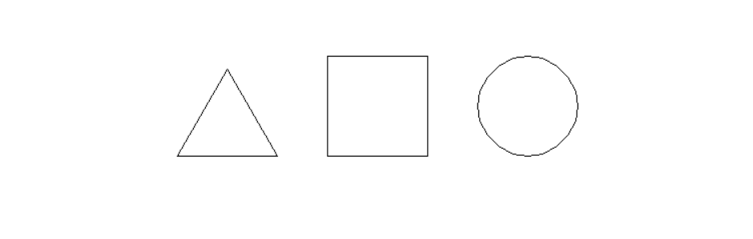
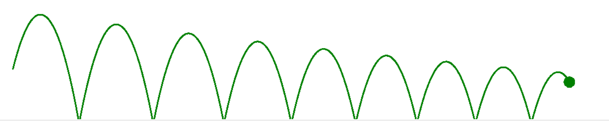

Turtle#
Импорт#
import turtle
pen = turtle.Turtle()
turtle.mainloop() # зацикливает окно программы, чтобы оно не закрылось
Основные команды#
turtle.forward(distance)
Двигать черепаху вперёд на указанный distance, в сторону направления черепахи.
turtle.backward(distance)
Переместить черепаху назад на distance, противоположную направлению, в котором движется черепаха. Не меняет направление черепахи.
turtle.right(angle)
Повернуть черепаху направо на angle единиц. (Единицы измерения по умолчанию являются градусами, но могут быть установлены с помощью функций degrees() и radians()). Ориентация угла зависит от режима черепахи, см. mode()
turtle.left(angle)
Повернуть черепаху налево на angle единиц. (Единицы измерения по умолчанию являются градусами, но могут устанавливаться с помощью функций degrees() и radians()). Ориентация угла зависит от режима черепахи, см. mode()
turtle.circle(radius, extent=None, steps=None)
- radius – число
- extent – число (или None)
- steps – целое число (или None)
Нарисовать круг с заданным radius. Центр — это radius единиц слева от черепахи; угол extent определяет, какая часть окружности нарисована. Если extent не указан, нарисовать весь круг. Если extent не является полным кругом, одна конечная точка дуги является текущим положением пера. Провести дугу против часовой стрелки, если radius положительный, в противном случае — по часовой стрелке. Наконец, направление черепахи изменяется на extent.
Поскольку окружность аппроксимируется вписанным правильным многоугольником, steps определяет количество шагов для использования. Если он не указан, он будет рассчитан автоматически. Может использоваться для построения правильных многоугольников.
turtle.up()
Прекратить рисование (поднять перо)
turtle.down()
Возобновить рисование (опустить перо)
turtle.hideturtle()
Спрятать черепашку(стрелку)
turtle.undo
Отменить действие
turtle.bgcolor('black')
turtle.color('orange', 'yellow')
turtle.setpos(x, y)
turtle.sety(y)
turtle.setx(x)
turtle.ycor()
turtle.xcor()
turtle.begin_fill()
turtle.end_fill()
turtle.tracer(1)
turtle.delay(0)
turtle.speed(0)
Квадрат, треугольник и круг#

import turtle
pen = turtle.Turtle()
pen.up()
pen.backward(50)
pen.down()
pen.forward(100)
pen.left(90)
pen.forward(100)
pen.left(90)
pen.forward(100)
pen.left(90)
pen.forward(100)
pen.right(90)
pen.up()
pen.forward(50)
pen.down()
pen.forward(100)
pen.right(120)
pen.forward(100)
pen.right(120)
pen.forward(100)
pen.left(60)
pen.up()
pen.forward(250)
pen.down()
pen.circle(50, 360)
pen.hideturtle()
turtle.mainloop()
Pacman#
from turtle import *
color('black', 'yellow')
speed(0)
up()
backward(100)
down()
begin_fill()
right(60)
circle(100, 300)
left(90)
forward(100)
right(120)
forward(100)
end_fill()
mainloop()
Солнце#
from turtle import *
color('red', 'yellow')
begin_fill()
while True:
forward(200)
left(170)
if abs(pos()) < 1:
break
end_fill()
done()
Солнце-мандала#
from turtle import *
bgcolor('black')
t = Pen()
t.color('orange', 'yellow')
score = 0
while True:
score += 10
t.forward(score)
t.left(170)
Солнце-мандала 2#
import turtle
turtle.bgcolor("black")
t = turtle.Pen()
turtle.tracer(2)
turtle.delay(0)
t.color('orange')
go = 1
for i in range(0, 200):
t.forward(go)
t.left(75)
go+= 1
turtle.mainloop()
Спираль#
from turtle import *
tracer(3)
radius = 0
extent = 120
while radius < 100:
radius += 1
circle(radius, 90)
mainloop()
Треугольная спираль#
import turtle
turtle.setup(700,700)
turtle.title("Spiral")
turtle.speed(0)
turtle.hideturtle()
n=200
s=2
for i in range(n):
turtle.fd(s)
turtle.left(119)
s += 2
turtle.mainloop()
Мячик и след#

Решение
import turtle
import time
gravity = -0.005 # pixels/(time of iteration)^2
y_velocity = 1 # pixels/(time of iteration)
x_velocity = 0.25 # pixels/(time of iteration)
energy_loss = 0.95
width = 600
height = 800
window = turtle.Screen()
window.setup(width, height)
window.tracer(0)
ball = turtle.Turtle()
ball.penup()
ball.setx(-600)
ball.sety(-300)
ball.color(“green”)
ball.shape(“circle”)
ball.sety(ball.ycor() + y_velocity)
ball.pendown()
while True:
ball.sety(ball.ycor() + y_velocity)
ball.setx(ball.xcor() + x_velocity)
ball.circle(1, 360)
print(ball.ycor(), ball.xcor())
y_velocity += gravity
if ball.ycor() < -height / 2:
y_velocity = -y_velocity * energy_loss
window.update()
import turtle
import time
gravity = -0.005 # pixels/(time of iteration)^2
y_velocity = 1 # pixels/(time of iteration)
x_velocity = 0.25 # pixels/(time of iteration)
energy_loss = 0.95
width = 600
height = 800
window = turtle.Screen()
window.setup(width, height)
window.tracer(0)
ball = turtle.Turtle()
ball.penup()
ball.setx(-600)
ball.sety(-300)
ball.color("green")
ball.shape("circle")
ball.sety(ball.ycor() + y_velocity)
ball.pendown()
while True:
ball.sety(ball.ycor() + y_velocity)
ball.setx(ball.xcor() + x_velocity)
ball.circle(1, 360)
print(ball.ycor(), ball.xcor())
y_velocity += gravity
if ball.ycor() < -height / 2:
y_velocity = -y_velocity * energy_loss
window.update()